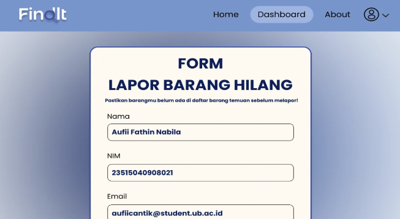
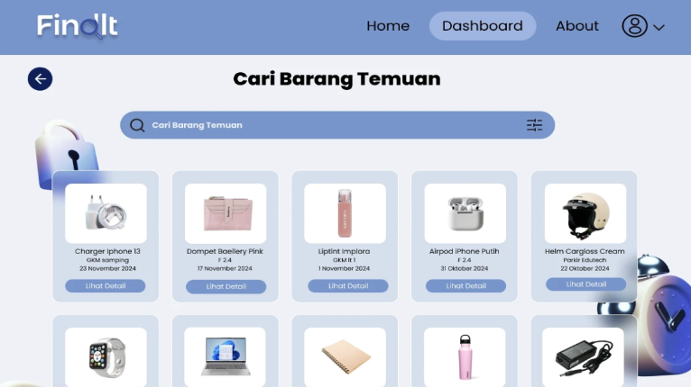

UI/UX Designer
Figma, Drawio
Oct 2024 - Nov 2024
The goal of this project was to create a prototype design for a website that simplifies the reporting and searching of lost items within a campus environment. The focus was on implementing the previously planned website design into a functional prototype, ensuring usability and alignment with user needs.
The application includes a feature that allows users to report lost items. Once a report is submitted, it is processed by the admin, ensuring that the item is logged and tracked for further action.
Users can search for lost items through the app. If the item they are looking for appears in the list of lost items, they can claim ownership.
Defined system requirements by analyzing the needs of users and administrators. This phase focused on identifying key features for reporting and searching lost items, followed by drafting the initial system design to ensure alignment with project objectives.
Translated the planned system into a visual interface by designing layouts and key features such as lost item reporting and search functionality. The design focused on creating an intuitive and user-friendly experience that adhered to the defined system requirements.
Evaluated the usability and functionality of the design through user testing. Feedback from this phase was used to identify areas for improvement and refine the interface, ensuring the final prototype met usability standards and user expectations.